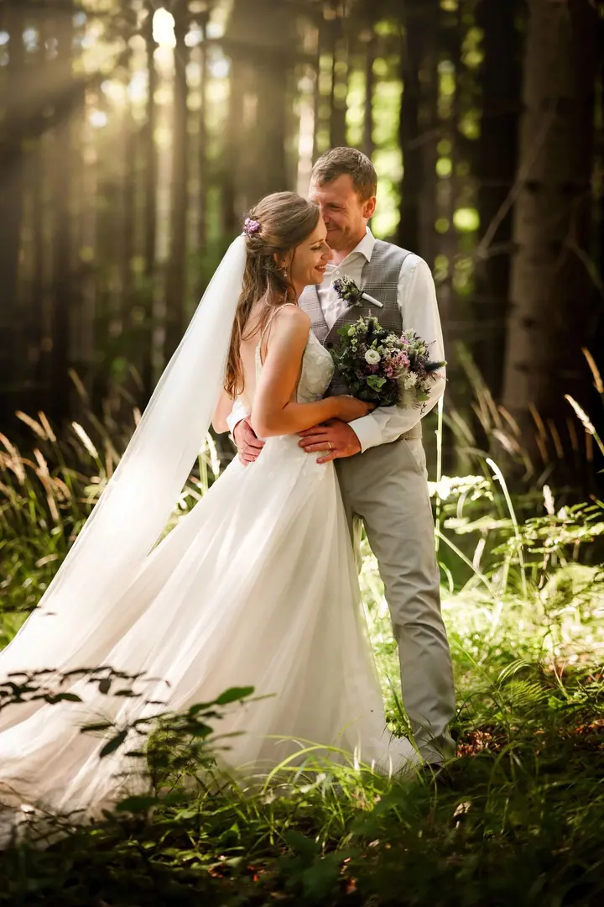
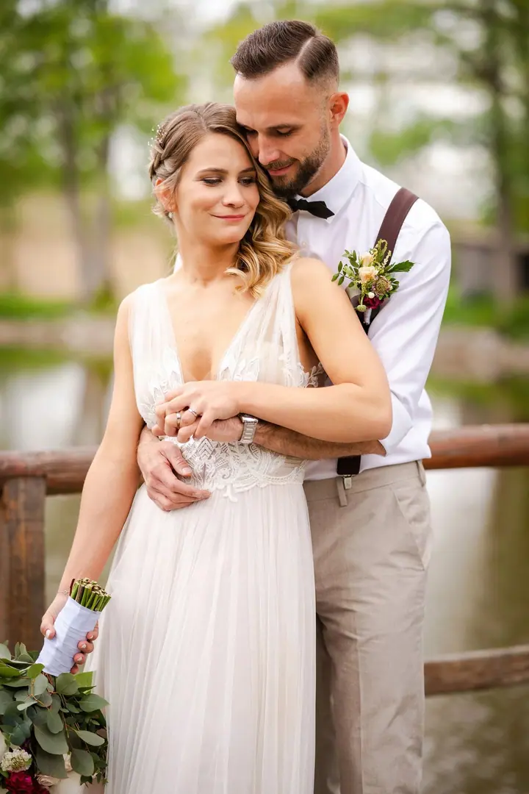

jedna
Svatební foto
Fotky z vašeho svatebního dne bez strojených póz. Fotím reportážně, zachycuji přirozené emoce a momentky, ke kterým se budete rádi vracet.

Svatební fotograf a kameraman · Pardubice, Východní Čechy, celá Česká republika

Jmenuji se Břetislav Válek a fotím a natáčím svatby bez křeče a zbytečných póz. Ve váš den jsem klidný parťák s foťákem nebo kamerou, který pomůže, když je potřeba, a stáhne se, když má být prostor jen pro vás. Zachytím smích, dojetí i ty malé momenty mezi tím.
Více o mně
Co dělám
jedna
Fotky z vašeho svatebního dne bez strojených póz. Fotím reportážně, zachycuji přirozené emoce a momentky, ke kterým se budete rádi vracet.
Natočím a sestříhám svatební video, které vás vrátí do atmosféry vašeho dne. Budu u toho nenápadně a s citem, aby emoce zůstaly takové, jak jste je opravdu prožili.
Romantické a přirozené fotky během pohodové procházky v přírodě nebo na místě, které je pro vás výjimečné. Ideální chvíle jen pro vás dva ještě před svatbou.
Přirozené fotky vaší rodiny nebo dětí, žádné strojené pózy v ateliéru. Jen vy, já s foťákem a spousta zábavy a smíchu během společné procházky.

Až se k fotkám vrátíte, chci, abyste to znovu cítili.


Za objektivem
Jsem z Pardubic, a tak nejčastěji fotím po Východních Čechách. Klidně ale přijedu kamkoliv v rámci České republiky, stačí se ozvat a určitě se domluvíme.
Fotím převážně svatby, a to reportážním způsobem. Během dne se snažím splynout s davem a nenarušovat průběh svatby. Nasměruji vás, abyste na fotkách vypadali skvěle, zorganizuji skupinové focení, ale jinak o mně skoro nebudete vědět, i když budu pořád něco fotit.
Kromě focení svatby také natáčím. Foťák umí zastavit moment, kamera ho nechá znovu se nadechnout. Až se k fotkám nebo videu za pár let vrátíte, nechci, abyste viděli jen hezké obrázky. Chci, abyste to znovu cítili.
Břetislav
Napište mi pár řádků o vaší svatbě, datu a místě konání a o tom, jak si focení představujete. Klidně mi i zavolejte, rád si s vámi popovídám.
Sejdeme se osobně, nebo když jste z dálky, domluvíme se online. Probereme detaily, podepíšeme smlouvu a po zaplacení rezervačního poplatku máte termín jistý.
Týden až dva předem si potvrdíme harmonogram. V den svatby dorazím s předstihem a fotím reportážně, nenápadně a s citem.
Do týdne vám pošlu několik fotek na ukázku rodině a kamarádům. Do čtyř týdnů dostanete online galerii se všemi upravenými fotkami.
Portfolio
Otázky
Jsem z Pardubic, takže nejčastěji fotím po Východních Čechách. Přijedu ale kamkoliv v rámci České republiky.
Do týdne po svatbě vám pošlu několik fotek, abyste měli co ukazovat. Kompletní online galerii se všemi upravenými fotkami dostanete do čtyř týdnů.
Od samotného obřadu (Ceremony) přes to nejdůležitější (Vows) a půldenní focení (Wedding Story) až po celodenní focení (Full Wedding Day). Focení svateb začíná na 8 000 Kč.
Kromě online galerie připravím dárkový balíček s několika vytištěnými fotkami a flash diskem se všemi snímky. Nejraději ho předám osobně, jinak ho pošlu Zásilkovnou.